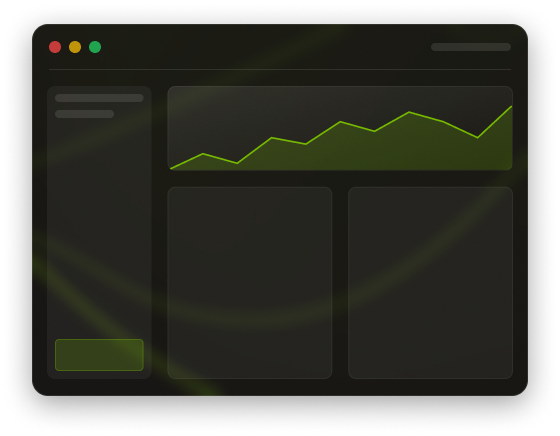

Monte seu próprio percurso de aprendizado. Nosso sistema identifica seu nível atual e sugere a sequência ideal de cursos para que você avance sem lacunas e sem tempo perdido.
Aprenda na prática,
evolua de verdade
Cursos criados por quem está no mercado. Conteúdo direto ao ponto, projetos reais e uma comunidade que aprende junto com você.
Começar agora →
Veja como é uma aula antes de se inscrever
Transparência total: assista a uma aula completa gratuitamente e sinta o ritmo, a didática e a profundidade do conteúdo antes de tomar sua decisão.
Acreditamos que aprender tecnologia não precisa ser complicado. Nossa metodologia foi desenhada para que você absorva conceitos complexos de forma gradual, construindo uma base sólida que sustenta o crescimento contínuo.
Cada módulo é pensado para simular desafios reais do mercado. Você sai da plataforma não apenas com conhecimento teórico, mas com um portfólio de projetos que comprova suas habilidades para qualquer recrutador.


A dot nasceu da frustração de profissionais que aprenderam tecnologia do jeito difícil. Acreditamos que um bom curso não entrega apenas vídeos — entrega contexto, raciocínio e a confiança de quem já resolveu esse problema antes. Cada aula é uma conversa entre quem sabe e quem quer saber.
Toda semana, sessões ao vivo com especialistas do mercado para tirar dúvidas, revisar código e discutir tendências. Você nunca fica travado por mais de 24 horas.
Ao concluir cada trilha, você recebe um certificado digital verificável, aceito por mais de 300 empresas parceiras. Compartilhe no LinkedIn e seja encontrado pelos recrutadores certos.
Aprenda no seu ritmo, sem abrir mão da qualidade
Acesso vitalício ao conteúdo, atualizações gratuitas sempre que o mercado mudar e suporte de uma comunidade ativa que celebra cada conquista sua.
03:03
Atividade discursiva
Em suas próprias palavras, explique qual a diferença entre programação orientada a objetos e programação funcional. Cite pelo menos um cenário em que cada abordagem seria mais vantajosa.
É isso aí!
Sua resposta foi registrada. Nossos instrutores vão revisá-la em breve.
Atividade Objetiva
Qual das alternativas descreve corretamente o conceito de closure em JavaScript?
Tente novamente!
Revise o conceito de escopo léxico e tente uma nova alternativa.
Perguntas frequentes
Tudo o que você precisa saber antes de começar sua jornada com a dot.
Preciso ter experiência prévia em programação?
Não! Nossos cursos foram desenhados para acolher quem está começando do zero. Você vai construir sua base passo a passo, com linguagem acessível e exemplos do mundo real — sem jargão desnecessário, sem pular etapas.
Quanto tempo preciso dedicar por semana?
Recomendamos entre 6 e 10 horas semanais para um progresso consistente, mas o ritmo é totalmente seu. O acesso é vitalício, então você estuda quando e onde quiser, sem pressão de prazos.
Os certificados são reconhecidos pelo mercado?
Sim. Nossos certificados são digitalmente verificáveis e reconhecidos por mais de 300 empresas parceiras. Cada certificado inclui um link de validação que pode ser compartilhado diretamente no LinkedIn ou enviado para recrutadores.
Posso acessar o conteúdo pelo celular?
Sim, a plataforma é totalmente responsiva. Você assiste às aulas, resolve atividades e acompanha seu progresso pelo smartphone ou tablet, sem perder nenhuma funcionalidade em relação ao desktop.
E se eu travar em algum conteúdo?
Nossa comunidade no Discord está sempre ativa, com alunos e instrutores prontos para ajudar. Além disso, realizamos sessões de mentoria ao vivo toda semana, onde você pode levar dúvidas diretamente para um especialista.